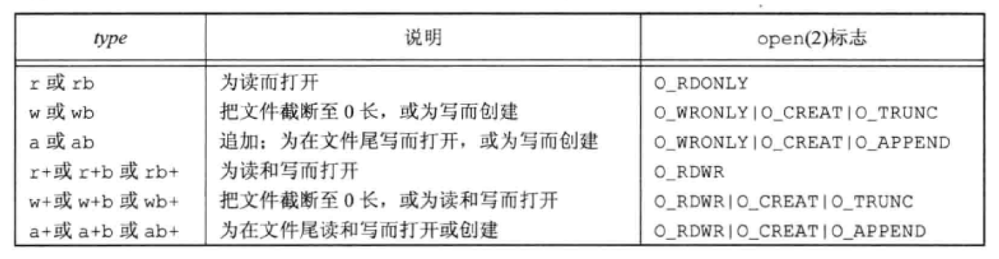
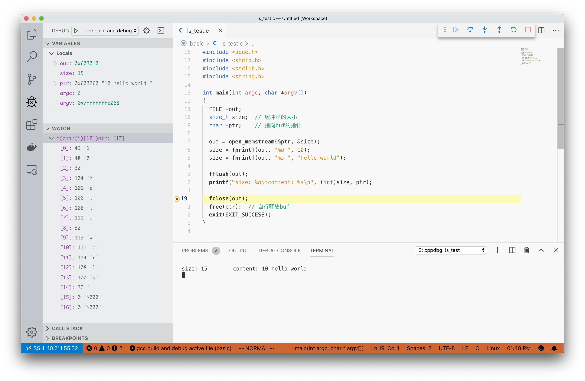

此为第五章笔记
流和FILE对象 在未定向的流上使用一个多字节I/O 函数，则该流的定向设置为 宽定向，而使用一个单字节I/O 函数，则被称为 字节定向。
freopen 函数可清除一个流的走向， fwide 函数可用于设置流的走向。后者的函数原型如下
1 2 3 4 #include <stdio.h> #include <wchar.h> int fwide (FILE *fp, int mode)
mode有以下几种情况：
负，字节定向
正，宽定向
0，不设置流走向，返回标识该流定向的值
这里， fwide 不改变已定向流的定向，且无错误值返回。所以，需要事先将 errno 清除，从 fwide 返回时检查 errno 的值。
使用 fopen 函数可获得一个指向 FILE 对象（类型为 FILE*，文件指针）的指针，包含：
实际I/O的文件描述符
指向用于该流缓冲区的指针
缓冲区的长度
当前缓冲区中的字符数以及出错标志
进程中预定义了三个流：
标准输入 STDIN_FILENO
标准输出 STDOUT_FILENO
标准错误 STDERR_FILENO
缓冲 类型 缓冲的目的是尽可能减少使用 read 和 write 调用的次数。一下的几种缓冲类型：
全缓冲 在填满标准I/O缓冲区后才进行实际I/O操作。一般对文件 进行全缓冲。
冲洗（flush） 说明标准I/O缓冲区的写操作。可由标准I/O例程自动冲洗，或调用 fflush 函数冲洗一个流，将缓冲区中的内容写到磁盘上。
行缓冲 当在输入和输出中遇到换行符时，进行I/O操作。一般用于终端。每一行的缓冲区的长度是固定的，所以只要填满了缓冲区，即使没有写一个换行符，也会进行I/O操作。
不带缓冲 常用于标准错误流 strerr 的输出。
很多系统默认使用下列类型的缓冲：
标准错误是不带缓冲的
若是指向终端设备的流，则是行缓冲的；否则是全缓冲
函数设置 可以使用如下函数对缓冲的类型进行设置
1 2 3 4 #include <stdio.h> void setbuf (FILE *restrict fp, char *restrict buf) int setvbuf (FILE *restrict fp, char *restrict buf, int mode, size_t size)
setbuf 用于开启或关闭缓冲机制，开启缓冲则 buf 的大小为 BUFSIZ（定义在 <stdio.h> 中），否则将其设为 NULL。
setvbuf 函数可以通过 size 自由设置缓冲区大小（若 buf 为 NULL 则系统自动分配长度为 BUFSIZ 长度的缓冲区），使用 mode 参数精准设置其类型：
_IOFBF 全缓冲_IOLBF 行缓冲_IONBF 不带缓冲
GUN C 函数库使用 stat 的 st_blksize 所指定的值来设置最佳I/O缓冲区长度
使用函数 fflush 强制冲洗一个流，如下。若 fp 为 NULL，则将导致所有输出流被冲洗
1 2 3 #include <stdio.h> int fflush (FILE *fp)
打开和关闭流 1 2 3 4 5 #include <stdio.h> FILE *fopen (const char *restrict pathname, const char *restrict type) ;FILE *freopen (const char *restrict pathname, const char *restrict type, FILE *restrict fp) ;FILE *fdopen (int fd, const char *type) ;
fopen 函数为打开一个文件freopen 函数为在一个指定流上打开一个指定文件。其中，若那个流已经被开启，则会先将其关闭；若已经定向，则会被清楚定向。一般用于将指定文件打开为那三个预定的流。fdopen 函数为取一个已有的文件描述符（通过 open、 dup、 dup2、 fcntl、 pipe、socket、 socketpair 或 accept ）。一般用于创建管道和网络通信函数返回的描述符。
参数 type 的可选项

使用如下函数关闭一个流
1 2 3 #include <stdio.h> int fclose (FILE* fp)
文件在关闭之前，冲洗缓冲中的输出数据，丢弃任何输入数据。若缓冲区为标准库自动分配，则其会被释放。
进程正常终止时（直接调用 exit 函数，或从 main 函数返回），则所有带未写缓冲数据的标志I/O流都会被冲洗，所有打开的标志I/O流都被关闭。
读和写流 每次一个字符 输入函数 1 2 3 4 5 #include <stdio.h> int getc (FILE *fp) int fgetc (FILE *fp) int getchar (void )
getc 可被实现为宏，所以其参数不能有副作用，而 fgetc 肯定为函数，但是其调用时间要长于 getc （宏）
getchar 等同于 getc(stdin)
他们返回时将 unsigned char 转换为 int。这样就可以返回所有可能的字符值再加上一个已出错 或到达文件末尾 的指示值。但是这两者的值相同，所有就需要 ferror 或 feof 函数来区分。
1 2 3 4 5 6 #include <stdio.h> int ferror (FILE *fp) int feof (FILE *fp) void clearerr (FILE *fp)
FILE 对象维护两个标志：
可以使用上面第三个函数 clearerr 清除
读取数据后，可以调用 ungetc 函数将数据压会流中，和读出字符的顺序相反 。不能回送 EOF。
下列程序的作用是：读取文件，同时将标志输出和另一个文件相关联，调用函数 printf 变成了写文件操作
1 2 3 4 5 6 7 8 9 10 11 12 13 14 15 16 17 18 19 20 21 22 23 24 25 #include <apue.h> #include <stdio.h> #include <stdlib.h> int main (int argc, char *argv[]) FILE *fp_log = freopen("log.txt" , "w+" , stdout ); FILE *fp = fopen("ls_test.c" , "r" ); while (1 ) { int c = fgetc(fp); if (feof(fp) || ferror(fp)) { break ; } printf ("%c" , c); } fflush(fp_log); fclose(fp_log); fclose(fp); exit (EXIT_SUCCESS); }
执行此程序，会发现 log.txt 和 ls_test.c 的内容相同
输出函数 1 2 3 4 5 #include <stdio.h> int putc (int c, FILE *fp) int fputc (int c, FILE *fp) int putchar (int c)
每次一行 读取 1 2 3 4 #include <stdio.h> char *fgets (char *restrict buf, int n, FILE *restrict fp) char *gets (char *buf)
第二个函数不建议使用，会造成缓冲区溢出。
指定长度为 n，但是读取不超过 n-1，以 null 结尾。
写出 1 2 3 4 #include <stdio.h> int fputs (const char *restrict str, FILE *restrict fp) int puts (const char *str)
将一个以 null 字节终止的字符串写到指定的流中。
二进制 1 2 3 4 #include <stdio.h> size_t fread(void *restrict ptr, size_t size, size_t nobj, FILE *restrict fp);size_t fwrite(const void *restrict ptr, size_t size, size_t nobj, FILE *restrict fp);
不同编译程序以及系统间对齐的方式不同 ，以及多字节整数和浮点数的二进制格式不同 ，所以可以会产生误差。
定位 1 2 3 4 5 #include <stdio.h> long ftell (FILE *fp) int fseek (FILE *fp, long offset, int whence) void rewind (FILE *fp)
其中， whence 为起始位置，同 lseek 参数相同，SEEK_SET 为起始位置、 SEEK_CUR 为当前文件位置、 SEEK_END 为从文件的尾端。
格式化I/O 禁止死记硬背，不会的时候来查文档 PDFp147
临时文件 有缺陷的方案 1 2 3 4 #include <stdio.h> char *tmpnam (char *ptr) FILE *tmpfile (void ) ;
tmpnam 产生一个与现有文件名不同的有效路径名称，最多调用次数为 TMP_MAX（定义于 <stdio.h>）。其只有唯一的静态数据区，内存调用都会覆盖原有数据。传入参数为 NULL，则返回指向那个数据区的指针。路径最大长度为 L_tmpnam（定义于 <stdio.h>）。
tmpfile 会创建一个临时二进制文件（wb+）。关闭文件或程序结束后自动删除。通过 tmpnam 生成一个路径，然后创建文件，立刻 unlink。立刻删除，但是在内存中依然有。
存在的问题是，在获取随机文件名和创建文件间存在一个时间窗口，另一个进程可以用同样的名字创建文件。
1 2 3 4 5 6 7 8 9 10 11 12 13 14 15 16 17 18 19 20 21 22 23 24 25 26 27 28 29 #include <apue.h> #include <stdio.h> #include <stdlib.h> int main (int argc, char *argv[]) char name[L_tmpnam], line[MAXLINE]; FILE *fp; printf ("%s\n" , tmpnam(NULL )); tmpnam(name); printf ("%s\n" , name); if ((fp = tmpfile()) == NULL ) { err_sys("tmpfile error" ); } fputs ("one line of output\n" , fp); rewind(fp); if (fgets(line, sizeof (line), fp) == NULL ) { err_sys("fgets error" ); } fputs (line, stdout ); exit (EXIT_SUCCESS); }
输出如下
1 2 3 /tmp/fileeaj3A9 /tmp/fileUssMkl one line of output
更好的方案 1 2 3 4 5 6 7 #include <stdlib.h> char *mkdtemp (char *template ) int mkstemp (char *template )
使用的模板是 ....XXXXXX，需要对最后6位进行设置。
1 2 3 4 5 6 7 8 9 10 11 12 13 14 15 16 17 18 19 20 21 22 23 24 25 26 27 28 29 30 31 32 33 34 35 36 37 38 39 40 41 42 #include <apue.h> #include <errno.h> #include <stdio.h> #include <stdlib.h> #include <sys/stat.h> void make_temp (char *template ) int main (int argc, char *argv[]) char good_tempalte[] = "/tmp/dirXXXXXX" ; char *bad_template = "/tmp/dirXXXXXX" ; printf ("first ...\n" ); make_temp(good_tempalte); printf ("second ...\n" ); make_temp(bad_template); exit (EXIT_SUCCESS); } void make_temp (char *template ) int fd; struct stat sbuf ; if ((fd = mkstemp(template )) < 0 ) err_sys("can't create temp file" ); printf ("temp name = %s\n" , template ); close(fd); if (stat(template , &sbuf) < 0 ) { if (errno == ENOENT) printf ("%s\n" , strerror(errno)); else err_sys("stat failed" ); } else { printf ("file exists\n" ); unlink(template ); } }
第二段程序出现了段错误的问题
1 2 3 4 5 first ... temp name = /tmp/dirxqkUS1 file exists second ... [1] 4404 segmentation fault (core dumped) ./a.out
good_tempalte 数值是在栈上分配的。而 bad_template 使用的指针，只有指针自身是停留在栈上，编译器将字符串存放在可执行文件的只读段，所以无法修改，产生了段错误。
内存流 使用下列函数可以自定义 FILE 指向的buffer
1 FILE *fmemopen (void *restrict buf, size_t size, const char *restrict type) ;
示例用法如下
1 2 3 4 5 6 7 8 9 10 11 12 13 14 15 16 17 18 19 20 21 22 23 24 25 26 27 28 29 30 31 32 33 34 35 36 37 38 39 40 41 42 43 44 45 46 47 #include <apue.h> #include <stdio.h> #include <stdlib.h> #include <string.h> #define BSZ 48 int main (int argc, char *argv[]) FILE *fp; char buf[BSZ]; memset (buf, 'a' , BSZ-2 ); buf[BSZ-2 ] = '\0' ; buf[BSZ-1 ] = 'X' ; if ((fp = fmemopen(buf, BSZ, "w+" )) == NULL ) err_sys("fmemopen failed" ); printf ("initial buffer contents: %s\n" , buf); fprintf (fp, "hello world" ); printf ("before flush: %s\n" , buf); fflush(fp); printf ("after fflush: %s\n" , buf); printf ("len of string in buf = %ld\n" , (long )strlen (buf)); memset (buf, 'b' , BSZ-2 ); buf[BSZ-2 ] = '\0' ; buf[BSZ-1 ] = 'X' ; fprintf (fp, "hello world" ); fseek(fp, 0 , SEEK_SET); fflush(fp); printf ("after fseek: %s\n" , buf); printf ("len of string in buf = %ld\n" , (long )strlen (buf)); memset (buf, 'c' , BSZ-2 ); buf[BSZ-2 ] = '\0' ; buf[BSZ-1 ] = 'X' ; fprintf (fp, "hello world" ); fclose(fp); printf ("after fclose: %s\n" , buf); printf ("len of string in buf = %ld\n" , (long )strlen (buf)); exit (EXIT_SUCCESS); }
输出结果如下
1 2 3 4 5 6 7 8 initial buffer contents: before flush: after fflush: hello world len of string in buf = 11 after fseek: bbbbbbbbbbbhello world len of string in buf = 22 after fclose: hello worldccccccccccccccccccccccccccccccccccc len of string in buf = 46
创建内存流的其他两个函数分别是面向字节 的 open_memstream 和面向宽字节 的 open_wmemstream。它们创建的流只能写打开，且不能指定自己的缓冲区，需要自行释放缓冲区，缓冲区大小会自动增加。非常适合用来创建字符串，仅在内存中操作，性能很好 。测试函数如下：
1 2 3 4 5 6 7 8 9 10 11 12 13 14 15 16 17 18 19 20 21 22 #include <apue.h> #include <stdio.h> #include <stdlib.h> #include <string.h> int main (int argc, char *argv[]) FILE *out; size_t size; char *ptr; out = open_memstream(&ptr, &size); size = fprintf (out, "%d " , 10 ); size = fprintf (out, "%s " , "hello world" ); fflush(out); printf ("size: %d\tcontent: %s\n" , (int )size, ptr); fclose(out); free (ptr); exit (EXIT_SUCCESS); }
进行调试，查看 ptr 所指向的buf的变化：
